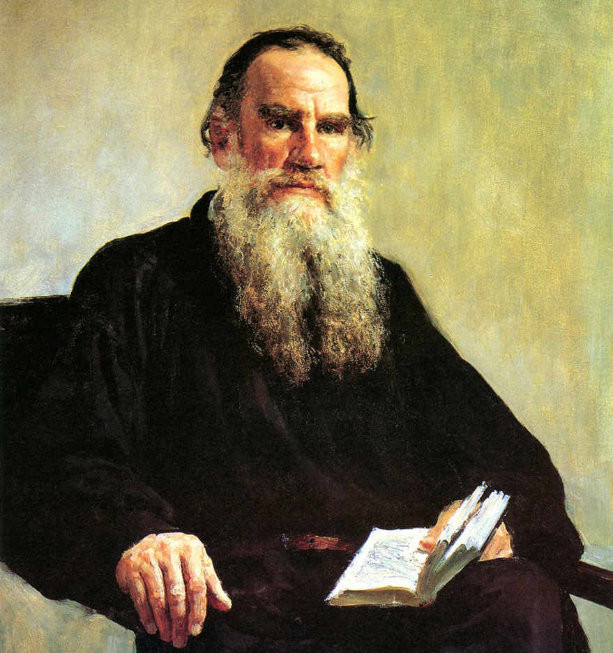
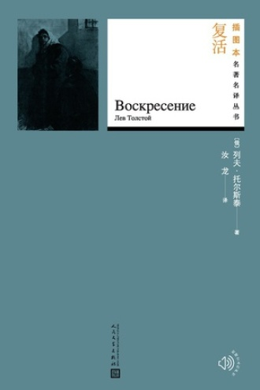

我是一个喜爱阅读的人，我读的书题材比较广泛，不过我最喜欢读的还是俄罗斯文学，而我最 喜欢的一名俄国作家便是大名鼎鼎的列夫·托尔斯泰。他是一位现实主义巨匠，与陀思妥耶夫斯基并称俄国文学的两座高山。其作品对当时的俄国乃至欧洲产生了巨大的影响。托尔斯泰创造了史诗体小说。历史的事实融合着艺术的虚构，奔放的笔触揉和着细腻的描写；在巨幅的群像中显现出个人的面貌，史诗的庄严肃穆中穿插有抒情的独白，变化万千，蔚为奇观。他善于驾驭多线索的结构，千头万绪，衔接得天衣无缝；又能突破小说的“封闭”形式，波澜壮阔，像生活那样无始无终。在他的众多小说中，我最喜欢的两部是《战争与和平》和《安娜·卡列尼娜》。 |
 |
.jpg) |
《战争与和平》，创作于1863—1869年。 该作以1812年的卫国战争为中心，反映从1805到1820年间的重大历史事件。以鲍尔康斯、别祖霍夫、罗斯托夫和库拉金四大贵族的经历为主线，在战争与和平的交替描写中把众多的事件和人物串联起来。 故事发生在1805年， 在拿破仑率兵征服欧洲之后，法国和俄国之间也发生了战争。可是在俄国上层社会，人们的生活依旧恬静悠闲，社交舞会照常举行。青年公爵安德烈·保尔康斯基把已有身孕的妻子交给退隐于领地“秃山”的父亲及妹妹玛丽娅之后，就担任库图佐夫将军的副官，向前线出发去了，他希望这次战争能为自己带来辉煌与荣耀。
安德烈刚刚留学归来的好友皮埃尔·别祖霍夫，是莫斯科数一数二的资本家，是社交界的宠儿。居心叵测的监护人库拉金公爵看到这一点，便企图把美貌但品行不端的女儿爱伦嫁给他，结果计谋顺利达成，可这桩婚事实在不幸之至。同年11月，安德烈所属的俄军在奥斯特里茨之役战败。安德烈历尽种种艰难后回到秃山。当日夜晚，妻子莉沙正好产下一名男婴，但她却在分娩时死去了。安德烈陷入孤独和绝望中，他觉得自己的人生已告结束，便下定决心终老于领地。另一方面，婚后不久的皮埃尔发现妻子爱伦与好友多勃赫夫之间存在暧昧关系，为了保护自己的名声，他与多勃赫夫进行决斗。在幸运地击倒对方后，皮埃尔即与妻子分居，他也陷入了善恶和生死问题的困扰之中。不久，皮埃尔加入了共济会，得出了一套生活的哲学。他又怀着宽宏大量之心，接回了妻子。
1807年2月，俄奥联军在埃尔劳与法军进行了一场残酷的鏖战，双方损失都很惨重。6月拿破仑与沙皇签署了和平协定，暂时的和平生活开始了。1809年春天，安德烈因贵族会之事而去拜托罗斯托夫公爵。在公爵家里，他立即为充满生命力、美丽动人的公爵的女儿娜塔莎所吸引，娜塔莎答应了他的求婚。但秃山老公爵认为她不够富有，年龄太小而加以反对。最后双方相约一年后成婚。不久，安德烈出国了。娜塔莎伤心地答应等待一年，却又无法忍受寂寞。她结识了爱伦的兄弟阿纳托尔。在他的诱惑下，两人决定私奔。至此，她与安德烈的婚约宣告无效。这对安德烈骄傲的性格是一次极其沉重的打击，为此他痛苦不堪。然而由于军务缠身，他对此事又渐渐淡忘了。
1812年，拿破仑率先撕毁原来的和平协定，指挥军队跨过涅曼河，俄法两国再度交战，年迈的库图佐夫将军决心阻止法军继续向前推进，但由于战术失误和其他原因，并未使俄军毕其功于一役。战役还不断进行着，双方损失都很惨重。最后，俄法军队在博罗狄诺展开了一场异常激烈的争夺战。显然，这是俄军所进行的最糟糕的战役。库图佐夫不得不痛心地宣布军队无力保卫莫斯科，拿破仑则作为胜利者进抵又一座空城。安德烈在博罗狄诺战役中身负重伤。罗斯托夫家将原本用来搬运家产的马车，改派去运送伤兵。娜塔莎意外地在伤员中发现了奄奄一息的安德烈。她向他谢罪，并精心地看护他。彼此间又旧情重萌，但为时已晚。安德烈伤口恶化，不久即在睡梦中逝去。
皮埃尔留在莫斯科，决意做一名民族英雄。他化装成农夫，想伺机刺杀拿破仑，但在解救一位遭受法国士兵凌辱的俄国妇女时，他被捕成为俘虏。皮埃尔的妻子爱伦在战火中仍然难以抑止自己的放荡行为，最后，因误食堕胎药而死亡。拿破仑的军队在空城莫斯科完全分崩离析，他疲劳地等待着，寄希望于沙皇要求他签订和平协定。但是这一天迟迟不来，他只好放弃莫斯科回师法国。在通往斯摩梭斯克的途中，法军彻底瓦解，成为一群落荒而逃、恣意抢掠的乌合之众。在哥萨克人的不断骚扰下，大量俄国战俘被解救，皮埃尔也重获自由。俄国终于赢得了战争的胜利。
皮埃尔又回到了莫斯科，恢复了同罗斯托夫和保尔康斯基一家的友谊。娜塔莎吸引了他，而他也突然意识到娜塔莎已长大成人。于是时机一成熟，他就恭请她父母同意他们的婚事。与此同时，娜塔莎之兄尼古拉也正在考虑娶安德烈之妹玛丽娅为妻。皮埃尔与娜塔莎结为伉俪，生活幸福。这位曾经单纯而轻浮的女子变成了一个勤劳能干的妻子。他们结婚8年后，养育了4个可爱聪敏的孩子。娜塔莎完全把自己的一切献给了丈夫和孩子们。他们发现彼此的生活实现了他们过去的梦想。尼古拉虽然无法完全肯定自己对玛丽娅的爱，却懂得这桩婚事明智适宜。他们收养了安德烈的儿子尼古路什卡，生活也十分快乐幸福
|
.jpg) |
|
《复活》创作于19世纪80年代到九十年代。 托尔斯泰在相继完成了巨著《战争与和平》《安娜·卡列尼娜》之后，进入晚年的他世界观发生了根本转变，他的艺术批判力量达到了高峰，达到了“撕毁一切假面具”的“清醒现实主义”。这无疑是他艺术探索的结果，同时更是他精神探索的结果。以广大农民的眼光观察俄国现实生活，代表农民阶级发表意见，这是他晚期创作巨大批判力量的主要源泉。这在他的各种作品中，特别是长篇小说《复活》中表现得最鲜明、也最为突出。托尔斯泰以俄国1860年至1905年的社会生活为背景创作了《复活》，小说中的男主人公聂赫留朵夫就是托尔斯泰对自己的一个寄托，是自己内心的缩影。 该书取材于一件真实事件，主要描写男主人公聂赫留朵夫引诱姑妈家女仆玛丝洛娃，使她怀孕并被赶出家门。后来，她沦为妓女，因被指控谋财害命而受审判。男主人公以陪审员的身份出庭，见到从前被他引诱的女人，深受良心谴责。他为她奔走申冤，并请求同她结婚，以赎回自己的罪过。上诉失败后，他陪她流放西伯利亚。他的行为感动了她，使她重新爱他。但为了不损害他的名誉和地位，她最终没有和他结婚而同一个革命者结为伉俪。 《复活》是托尔斯泰最后一部长篇小说，是作家一生探索和思想的总结，被誉为俄国批判现实主义发展的高峰。小说通过玛丝洛娃的苦难遭遇和聂赫留朵夫的上诉经过，广泛而深刻地抨击了法庭、监狱、官僚机关的腐败、黑暗，揭露了封建统治阶级骄奢淫逸的生活和反动官吏的残暴昏庸、毫无人性，撕下了官办教会的伪善面纱，反映了农村的破产和农民的极端贫困，勾画了一幅已经走到崩溃边缘的农奴制俄国的社会图画。
|
 |